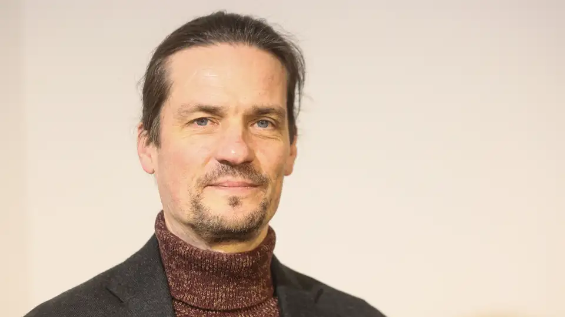

Demokratische Vielfalt
Mir ist wichtig, dass die Bürgerinnen und Bürger in Worpswede unabhängig von Fraktionen eine echte Auswahl haben. Demokratie lebt von Alternativen.
Unternehmer, Kulturschaffender und engagierter Bürger — ich kandidiere als parteiloser Einzelbewerber für das Amt des Bürgermeisters.


Über mich
Ich bin Markus Lippeck — seit vielen Jahren fest verwurzelt in Worpswede.
Als Unternehmer und Kulturschaffender kenne ich unsere Gemeinde, ihre Stärken und ihre Herausforderungen. Nach vielen Gesprächen und sorgfältiger Abwägung habe ich mich entschieden, Verantwortung zu übernehmen und als unabhängiger Einzelbewerber für das Amt des Bürgermeisters zu kandidieren.
Ich glaube daran, dass Worpswede eine Führung verdient, die allen Bürgerinnen und Bürgern zuhört — unabhängig von Parteizugehörigkeit oder Fraktionszwängen.
Nach vielen Gesprächen und sorgfältiger Abwägung habe ich mich entschieden, Verantwortung zu übernehmen und zu kandidieren.
Meine Vision
Mir ist wichtig, dass die Bürgerinnen und Bürger in Worpswede unabhängig von Fraktionen eine echte Auswahl haben. Demokratie lebt von Alternativen.
Als Kulturschaffender weiß ich um die Kraft der Kunst und Gemeinschaft. Worpswede hat eine einzigartige kulturelle Identität, die wir stärken und weiterentwickeln müssen.
Mit meiner Erfahrung als Unternehmer bringe ich pragmatische Lösungsansätze und wirtschaftliches Verständnis in die Gemeindearbeit ein — für ein zukunftsfähiges Worpswede.
Unsere Gemeinde verdient nachhaltige Entscheidungen, die nicht nur heute, sondern auch morgen noch Bestand haben — in ökologischer, sozialer und wirtschaftlicher Hinsicht.
Politik muss zuhören. Ich möchte ein offenes Ohr für alle Bürgerinnen und Bürger haben und gemeinsam Lösungen entwickeln.
Als parteiloser Kandidat bin ich keiner Fraktion verpflichtet — nur den Menschen in Worpswede. Meine Entscheidungen orientieren sich an sachlichen Argumenten, nicht an Parteilinien.
Positionspapier
Worpswede braucht einen Richtungswechsel – keine Fortschreibung der aktuellen Mehrheiten
Die Gespräche mit den Fraktionen haben für mich sehr schnell deutlich gemacht: Mit der derzeitigen politischen Konstellation – geprägt von linken, grün geprägten und mittig moderierenden Kräften – ist ein grundlegender struktureller Reformkurs nicht konsensfähig.
Ich respektiere jede politische Position. Aber ich stehe nicht für Verwaltung des Bestehenden. Ich stehe für Veränderung. Deshalb kandidiere ich bewusst unabhängig.
Worpswede braucht klare Prioritäten, wirtschaftliche Vernunft und verbindliche Entscheidungen. Was wir derzeit erleben, ist ein politisches Gleichgewicht, das eher moderiert als gestaltet. Zwischen Kompromisssuche und Dauerabstimmung bleibt die strukturelle Weiterentwicklung der Gemeinde auf der Strecke.
Ich bin nicht angetreten, um Teil dieser Balance zu werden. Ich bin angetreten, um sie zu überwinden.
Worpswede muss den Mut haben, über Verwaltungs- und Gebietsstrukturen offen zu sprechen. Historisch gewachsene Strukturen sind kein Selbstzweck. Wenn sie Handlungsfähigkeit einschränken oder wirtschaftliche Entwicklung hemmen, müssen sie überprüft und gegebenenfalls reformiert werden.
Reformen sind kein Angriff auf Identität. Sie sind Voraussetzung für Zukunftsfähigkeit.
Kultur ist das Herz dieser Gemeinde – aber sie darf nicht dauerhaft strukturell defizitär organisiert sein. Ich setze mich dafür ein, den Kulturbetrieb strategisch und wirtschaftlich neu aufzustellen. Eine unabhängige Stiftung mit klarer Governance, professionellem Management und transparenter Finanzierung ist aus meiner Sicht ein realistischer Weg.
Kultur muss Identität stiften – und zugleich wirtschaftliche Impulse für Gastronomie, Tourismus und Handel erzeugen.
Worpswede ist mehr als sein Ortskern. Die umliegenden Dörfer, landwirtschaftlichen Betriebe und regionalen Unternehmen müssen systematisch in eine neue wirtschaftliche Gesamtstrategie eingebunden werden.
Ich will:
Worpswede kann Modell für integrierten Kultur- und Landtourismus werden. Aber nur mit strukturellem Neudenken.
Die Verwaltung ist kein Selbstzweck. Sie ist Dienstleister für Bürger und Betriebe.
Worpswede braucht:
Die Entwicklung im Bereich Künstliche Intelligenz wird kommunale Verwaltung grundlegend verändern. Wer jetzt nicht investiert und modernisiert, verliert Zeit, Effizienz und Attraktivität als Standort. Ich stehe für eine serviceorientierte, digitale und leistungsfähige Verwaltung, die dem Bürger dient – nicht sich selbst.
Ich kandidiere nicht gegen einzelne Personen.
Ich kandidiere gegen strukturelle Selbstzufriedenheit.
Worpswede braucht Führung mit Entscheidungsstärke, wirtschaftlicher Vernunft und Mut zur Reform.
Dafür stehe ich.
Mitmachen
Ich sammle derzeit die erforderlichen Unterstützungsunterschriften, um zur Bürgermeisterwahl zugelassen zu werden. Die Unterstützungsunterschrift ist keine Wahlempfehlung, sondern ermöglicht demokratische Vielfalt.
Kontakt